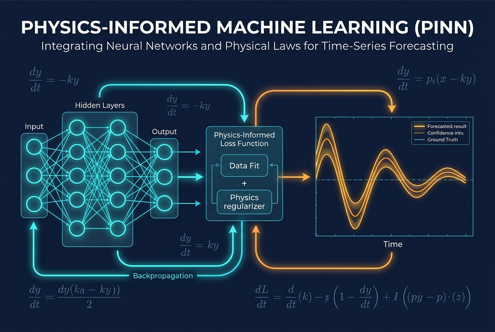
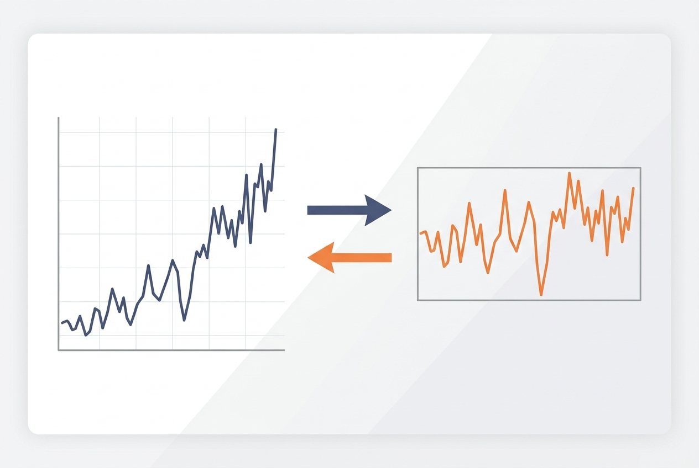
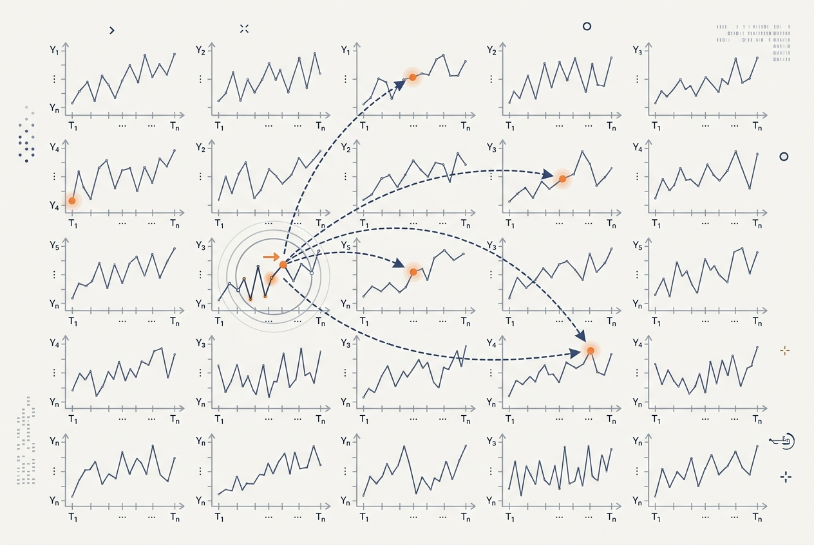
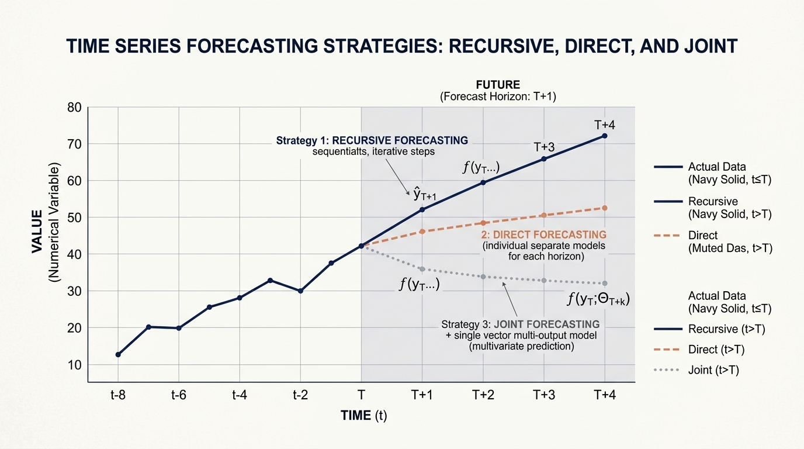

PyTorch의 .backward()는 대개 정답 그래디언트를 돌려주는 블랙박스로 다뤄집니다. 이 글은 그 상자를 엽니다. 리프 텐서, 텐서 연산이 만드는 동적 그래프, 역전파가 연쇄 법칙을 실행하는 방식을 해석 미분·수치 미분으로 검증하고, nn.Module과 옵티마이저 없이 autograd만으로 소규모 신경망을 학습시켜 그 구조를 눈으로 확인합니다.
.backward()
nn.Module
예측값 하나는 의사결정이 가장 필요로 하는 것, 즉 일어날 수 있는 일의 범위를 숨깁니다. 이 글은 핀볼 손실부터 확률적 예측을 쌓아 올리고, 이분산 데이터에서 점 예측과 고정 구간이 왜 실패하는지 실행 코드로 보이며, 교정·분위수 교차·CRPS를 다룹니다.

딥러닝 시계열 예측에서 물리 잔차, 페널티, hard parameterization을 구분하고 물리적으로 불가능한 예측을 줄이는 구현 방법을 설명합니다.

시계열의 평균과 분산이 시간에 따라 표류하면, 과거로 학습한 모델은 스케일조차 본 적 없는 테스트 데이터를 만납니다. 이 글은 비정상성과 개념 표류를 바닥부터 설명하고, 실행 가능한 코드로 소박한 정규화에서 가역 인스턴스 정규화(RevIN)까지 쌓아 올립니다.

셀프 어텐션은 시퀀스 길이에 대해 O(L^2) 비용이 들며, 이는 긴 시계열에 치명적입니다. 이 글은 그 비용을 벗어나는 매우 다른 두 경로 — Informer의 ProbSparse 어텐션과 PatchTST의 패칭 — 을, 절감이 실제로 어디서 나오는지 측정하는 실행 가능한 코드와 함께 살펴봅니다.

H-스텝 예측을 어떻게 만들어 내는지는 그 자체로 하나의 모델링 결정입니다. 재귀(Recursive), 직접(Direct), 결합(Joint, MIMO) 전략을 오차 누적, 편향-분산 트레이드오프, 계산 비용, 그리고 각 전략이 유리해지는 조건의 관점에서 실행 가능한 코드와 함께 비교합니다.